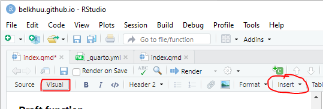

I. Exploring the guide on Quarto.org
The guide on quarto.org is great tool to start this website. However, it took me some time to get familiarized with it. I started by running the codes for a lot of the examples. I was also doing Google searches of what I wanted to do with my website before realizing that most of the information I needed was in the guide! I will mention the guide page every now and then below.
A. Copying code chunks
The little button that on the top right corner of the code chunks serves as a great tool to copy and paste the code chunks. I didn’t understand why turning off echo or applying code folding didn’t work properly for me. Maybe, it was due to bad indentation, spacing… I spent a good hour trying to find different ways to do the same thing. Finally, the problems went away the moment I start using these buttons instead of highlighting the codes and copying them.
To see an example, expand the note below.
To show the copy button for your own website, add this in your title block:
format:
html:
code-copy: trueValid values for code-copy include:
hover |
Show button on hover (default) |
true |
Always show code copy button |
false |
Never show code copy button |
My title block for this post looks like this!
---
title: "Blog Post: Assignment 1"
subtitle: "What I learned while working on this assignment"
author: "Bel Khuu"
date: "2022-09-12"
categories: [Code, R, Art, Assignment]
image: "image.jpg"
draft: true
format:
html:
code-fold: true
code-tools: true
code-copy: true
---B. Blogs on Quarto
When I decided that I wanted a blog setup for this assignment tab, there wasn’t anything in the guide that talked about this. You either build a website or you build a blog.
I figured that I should just create a temporary blog to see how it was different compared to a Quarto website. I found the files I needed and just copied them back my original project.
This is definitely an unusual way to do this. You can find the more straight forward way to do this under Listing Pages, under Documents Listings in the Quarto guide. Like I said, I explored around a lot before understanding that all I needed can be found in the guide. The note below is exactly what I did.
You can skip all the blog creation by downloading this Blog.zip file on my github page. Extract the files, then jump to the Merge the two project bullet point.
Add a new folder on GitHub by creating a new file. I created a read me file in a new “Assignment” folder. I typed “newfoldername/readme.md”. This will create a new website branch. It will become a new directory for a Quarto project.
belkhuu.github.io will be referred to as website project
belkhuu.github.io/Assignments/ will be referred to as blog project
Start a new project in R with the new directory and choose Quarto Blog.
Inspect the initial project folder, yaml and index files from the blog project folder
Merge the two project:
Rename the index.qmd to assignments.qmd
Copy the posts folder
Paste both to my website project folder
Make sure I added the Assignments tab is created in the website’s yaml file.
II. Understanding how to upload Quarto files to GitHub
Before publishing the changes to my website, I had to keep reminding myself of the following:
Manually set the directory to belkhuu.github.io, just in case I was working on something else.
Render the website on RStudio before uploading file from the _site folder to GitHub
Only pull what’s inside the _site folder to GitHub and not the folder itself
III. Create a more customized and sleek look for my website
I honestly spent most of the time working on the assignment on this part.
A. Hiding things
You can check out the Quarto guide under the name of HTML Code Blocks.
1. Hide huge code blocks with code folding
Add this in your title block.
format:
html:
code-fold: true2. Hide small or sections of code blocks by turning off echo
Just add #| echo: false at the beginning of your R block.
3. Hide warning messages
Just add #| warning: false at the beginning of your R block.
Every time I run the codes with the tidyverse library, it keeps giving me this block of warning, which is what you would see in the console. So after hiding all the code blocks, I couldn’t hide this part of the output. It was upsetting.
4. Hide/Collapse note or tips using Callout Blocks
I will talk more about callout blocks in section E. since it is something that I learned as I was working on this first blog post.
B. Insert media
I just learned in the 9/13 lab that you can just click on the Insert Button using the Visual mode in R.I haven’t really explore this option yet.

Below, I have codes that you can copy to your code chunks.
1. Images
This is just like using R markdown. I love pulling the images using a URL. This way, I don’t have to download it!
Insert image from a local folder:

Insert image using a URL:
When using a URL, you need to grab to correct link:
Right click and select “Open image in new tab”
Then, right click and select “Copy image address”
2. Embed Videos
I used a package that I found online called vembedr. The package lets you use the URL for YouTube, Vimeo, Box and Microsoft Stream.
Here is an example of what my code chunk for Assignment 1.
#| warning: false
#| label: fig-karen
#| fig-cap: "KarenXCheng uses Dall-E 2, an AI tool, to generate images. "
library("vembedr")
embed_url("https://youtu.be/eUSx4_S6O34")%>%
use_align("center")3. Hyperlinking URLs
[Name your link](github.com)C. Live references and captions
This is called Cross References on the Quarto guide.
1. In R blocks
#| label: fig-lightgreen
#| fig-cap: "Light Green Color"2. In text blocks
To my understanding this is a different type of markdown language.
::: {#fig-sprawl}
{width="60%"}
Sprawl by Mark J. Stock <- this is the caption!
:::3. Refer to figure in text
@fig-lightgreen is a modified version of "Fall Color"D. Theme of the website
Just change the theme in the _quarto.yml file! Check out the different themes on the Quarto guide. It is called HTML theming.
format:
html:
theme: slate
css: styles.css
toc: trueE. More website tools I learned about while creating this blog post.
2. A Callout Box
You can check out the Callout Blocks in the Quarto guide. You can choose the type of callout box, and whether you want it to be collapsed by default.
::: {.callout-note collapse="true"}
Whatever you want to highlight here!
:::3. Draft function
Basically, you can render your website without publishing the new post.
Just add draft: false to your title block.
IV. Final notes
I learned all of the things above before I realized that the Prepare for Class 3 has a great reference for what I needed, How to Build a Quarto blog guide by Isabella Velásquez. That being said, it was not as interactive as the Quarto guide!
I’m not too happy with this first post yet. One thing I want to change is to fix the text wrap so that when the code chunks are too long, you won’t have to use the cursor.
Working on Cloud storage
If you are like me and love to work on cloud storage, you will find this tip helpful. Please note that this might only with cloud storage apps that have a desktop drop folder. For this project, I used the University’s OneDrive folder.
Create your R project on a desktop location first, then move it to the cloud folder!